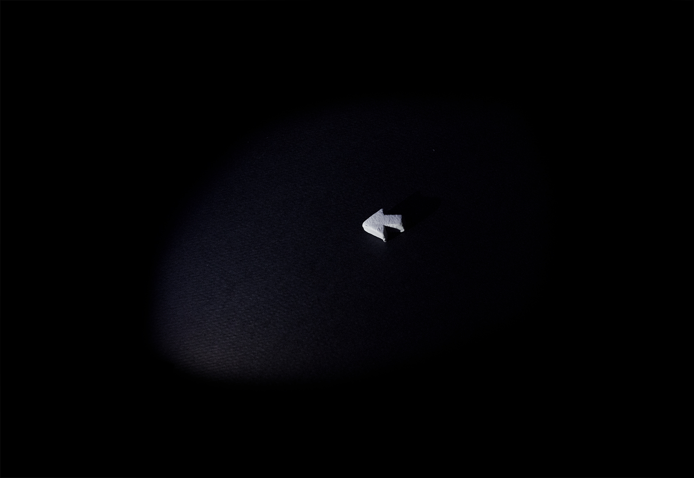
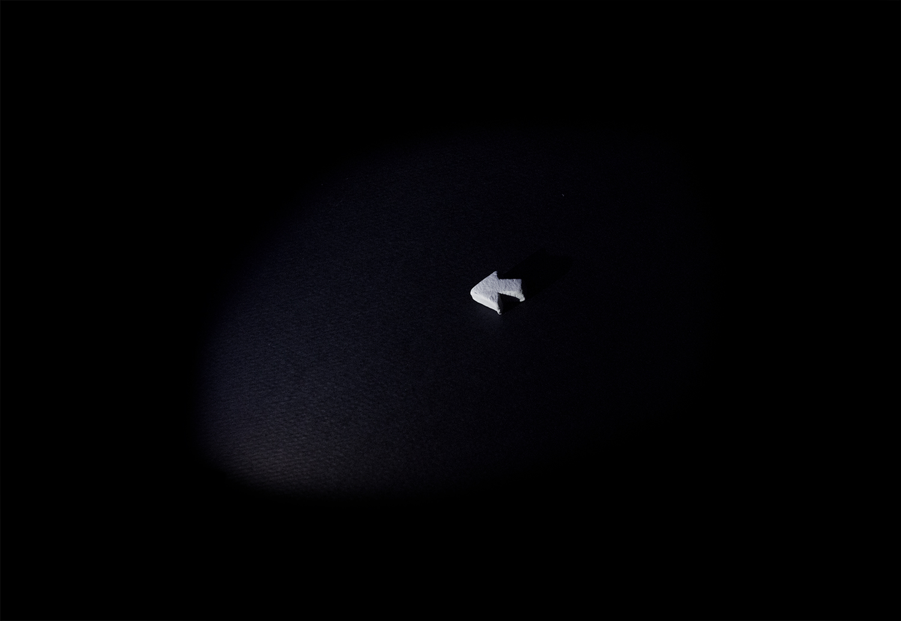

chef
I was asked, by my girlfriend's of my mother, if I’d produce the annual appeal video for a theatre company she worked with. Eager both for something creative to work on as a counterpoint to my serving job, and to impress Bridget, I said yes. I was put in touch with the head of the company, sent several resources, and I began to come up with an idea. I knew I could orchestrate some fairly elaborate animations using after effects and a neo-paper craft affect, having done it once before. This time, the animation needed to be synced to the company’s unofficial theme song. I drew out my central beats, I broke the song down, and I was met with very warm encouragement.
The deadline was only two weeks away. I’d say about two hours work amounted to fifteen seconds of video, here. I also had a full time job. As the two weeks came to a close, I was running on less and less sleep, and I experienced a strange warping of perspective. I was unsure about the quality of the video - unsure it was wise to promise to do something I had never done before. I wanted to make something better than what had followed. Appropriately, as the company had their sights set much higher for the coming season. I delivered it in time for their big fundraising gala, and was pleased, with a fresh perspective, to see the pennyseats, rather quickly, meet their fundraising goal.
Later, I learned that they had also used the video in order to get a large grant from the michigan council for the arts. Bridget told me they had boasted their support of “local artists”. I have to admit I was quite flattered to know that to someone, somewhere, I was unquestionably an artist.
Later, I learned that they had also used the video in order to get a large grant from the michigan council for the arts. Bridget told me they had boasted their support of “local artists”. I have to admit I was quite flattered to know that to someone, somewhere, I was unquestionably an artist.